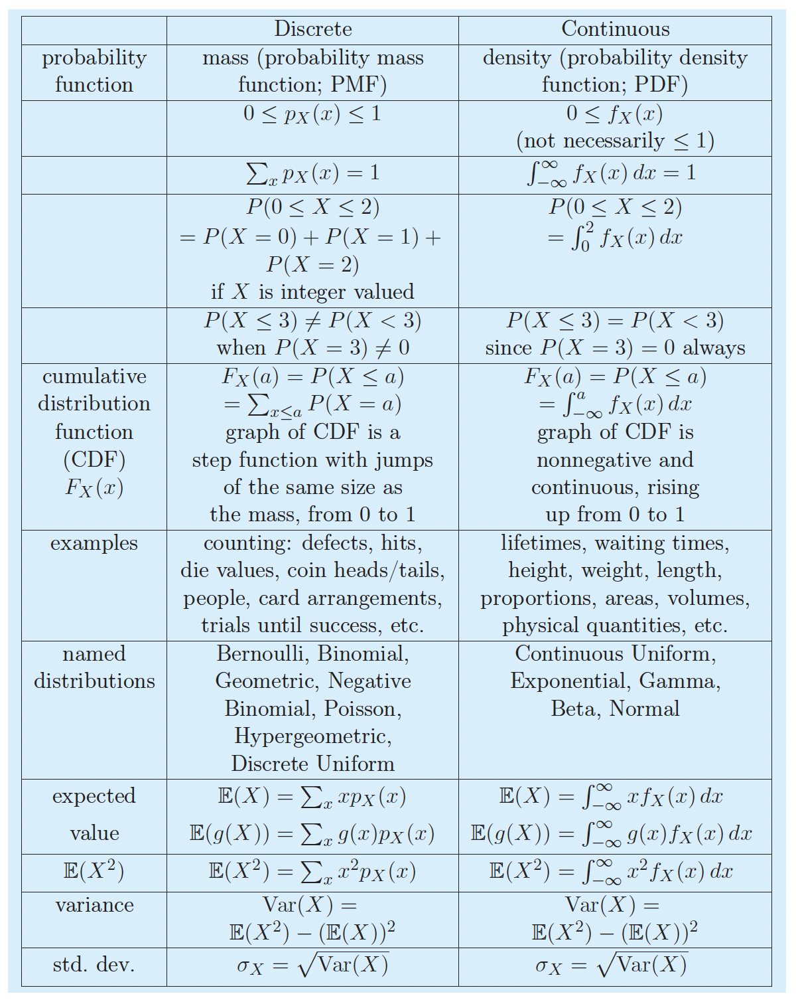
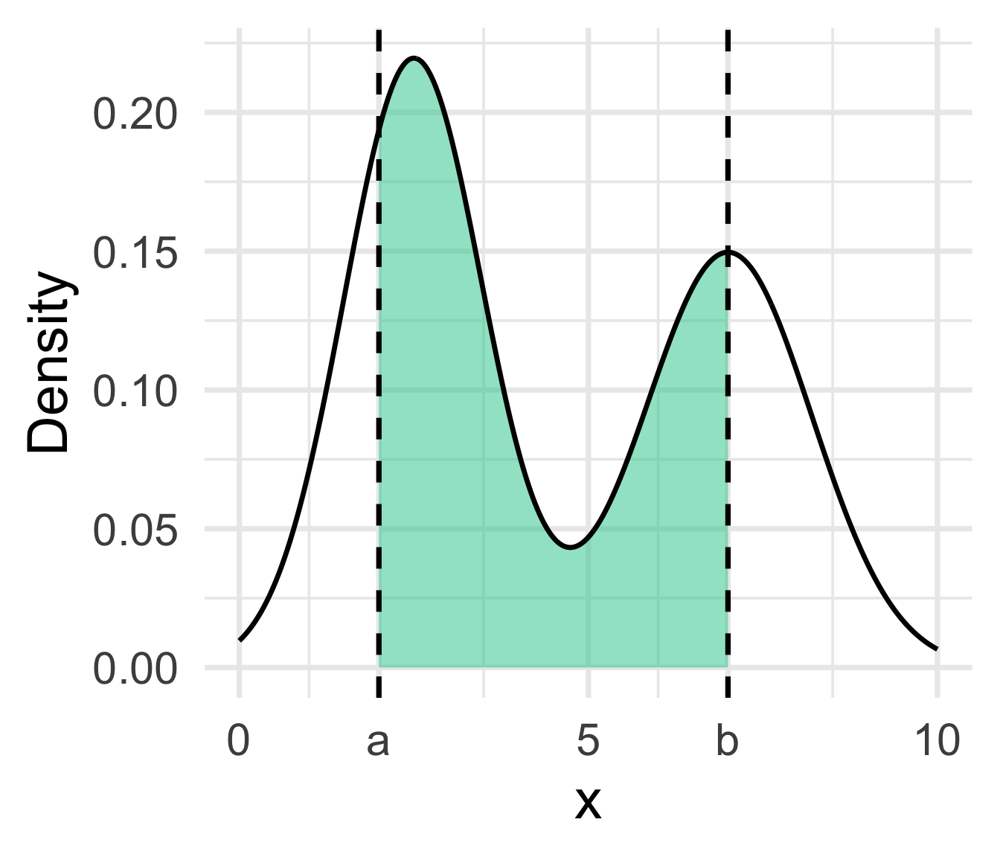
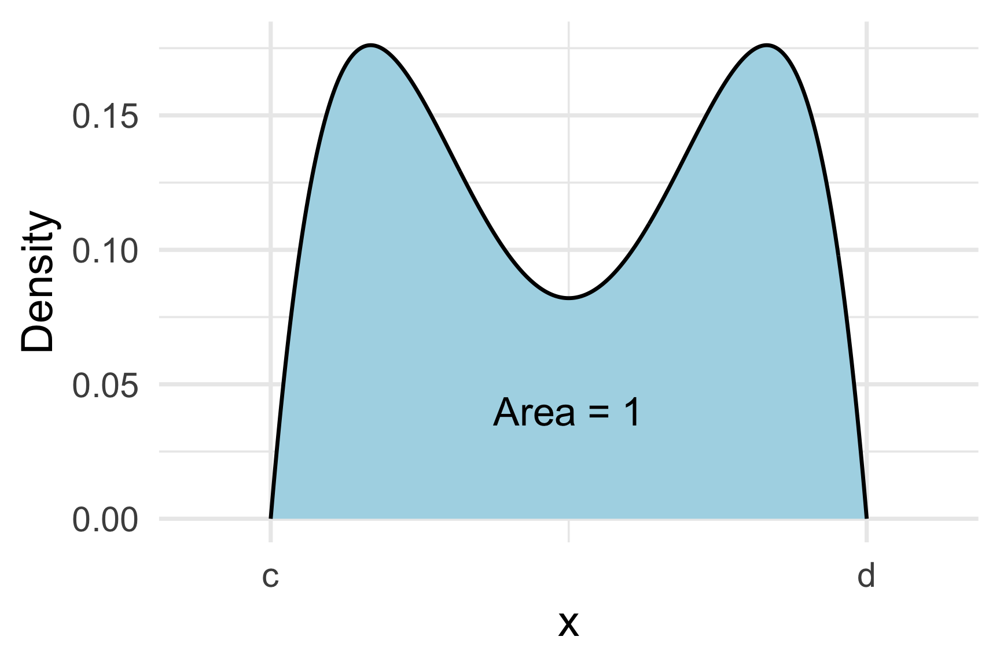
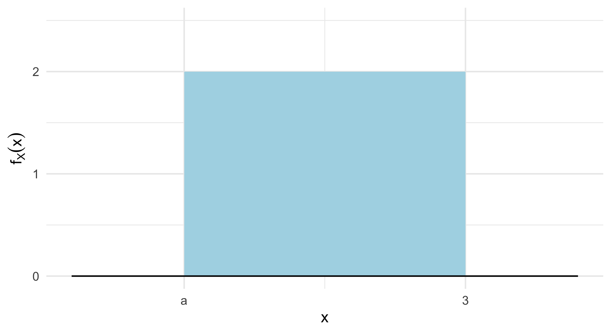
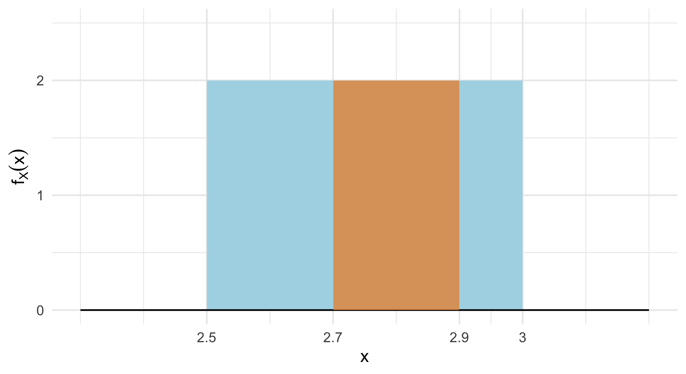
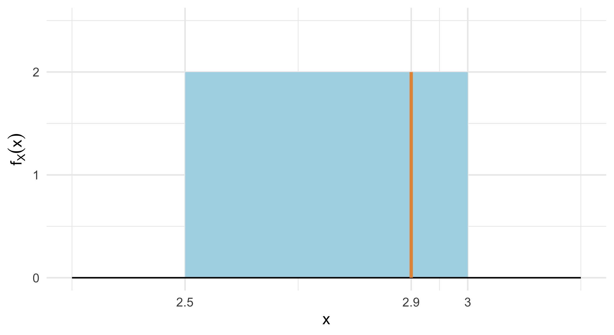
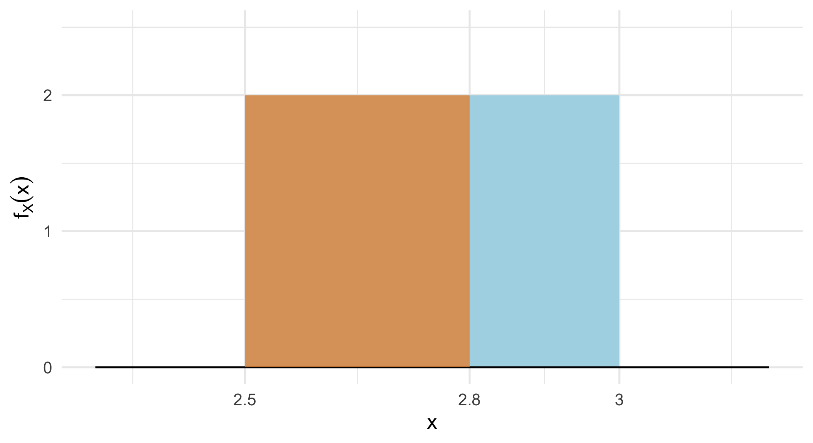

Lesson 8: Probability density functions (PDFs)
Learning Objectives
Distinguish between discrete and continuous random variables.
Calculate probabilities from pdfs for continuous random variables.
Use R to simulate known continuous distributions.
Where are we?

Learning Objectives
- Distinguish between discrete and continuous random variables.
Calculate probabilities from pdfs for continuous random variables.
Use R to simulate known continuous distributions.
Discrete vs. Continuous RVs
For a discrete RV, the set of possible values is either finite or can be put into a countably infinite list.
Continuous RVs take on values from continuous intervals, or unions of continuous intervals

How to define probabilities for continuous RVs?
Discrete RV \(X\):
- pmf: \(p_X(x) = P(X=x)\)
Continuous RV \(X\):

- density: \(f_X(x)\)
- probability: \(P(a \leq X \leq b) = \int_a^b f_X(x)dx\)
What is a probability density function?
Probability density function
The probability distribution, or probability density function (pdf), of a continuous random variable \(X\) is a function \(f_X(x)\), such that for all real values \(a,b\) with \(a \leq b\),
\[\mathbb{P}(a \leq X \leq b) = \int_a^b f_X(x)dx\]
Remarks:
Note that \(f_X(x) \neq \mathbb{P}(X=x)\)!!!
In order for \(f_X(x)\) to be a pdf, it needs to satisfy the properties
\(f_X(x) \geq 0\) for all \(x\)
\(\int_{-\infty}^{\infty} f_X(x)dx=1\): the total area under the curve is 1

Learning Objectives
- Distinguish between discrete and continuous random variables.
- Calculate probabilities from pdfs for continuous random variables.
- Use R to simulate known continuous distributions.
Let’s demonstrate the PDF with an example (1/5)
Example 1.1
Let \(f_X(x)= 2\), for \(a \leq x \leq 3\).
- Find the value of \(a\) so that \(f_X(x)\) is a valid pdf.

Let’s demonstrate the PDF with an example (2/5)
Example 1.2
Let \(f_X(x)= 2\), for \(2.5 \leq x \leq 3\).
- Find \(\mathbb{P}(2.7 \leq X \leq 2.9)\).

Let’s demonstrate the PDF with an example (3/5)
Example 1.3
Let \(f_X(x)= 2\), for \(2.5 \leq x \leq 3\).
- Find \(\mathbb{P}(2.7 < X \leq 2.9)\).

Let’s demonstrate the PDF with an example (4/5)
Example 1.4
Let \(f_X(x)= 2\), for \(2.5 \leq x \leq 3\).
- Find \(\mathbb{P}(X = 2.9)\).

Let’s demonstrate the PDF with an example (5/5)
Example 1.5
Let \(f_X(x)= 2\), for \(2.5 \leq x \leq 3\).
- Find \(\mathbb{P}(X \leq 2.8)\).

Learning Objectives
Distinguish between discrete and continuous random variables.
Calculate probabilities from pdfs for continuous random variables.
- Use R to simulate known continuous distributions.
Use R to simulate known distributions (1/3)
- We can use R to simulate continuous random variables and visualize their distributions
- For example, we can simulate a uniform distribution between 2.5 and 3: \(f_X(x) = 2\) for \(2.5 \leq x \leq 3\)
- 1
- Set the random seed once, so everyone gets the same random numbers.
- 2
-
Save the number of simulated values as
reps, so it is easy to change later. - 3
-
tibble()makes a table, which we save asuniform_sims. - 4
-
runif()draws random values from a uniform distribution.nis how many values, andminandmaxare the ends of the interval. - 5
-
head()shows the first 6 rows. Every value is a decimal number between 2.5 and 3.
# A tibble: 6 × 1
x
<dbl>
1 2.73
2 2.60
3 2.90
4 2.83
5 2.66
6 2.86Plot the simulated values and the pdf
1ggplot(uniform_sims, aes(x = x, y = after_stat(density))) +
2 geom_histogram(binwidth = 0.025, boundary = 2.5,
color = "black", fill = "lightblue") +
3 geom_hline(yintercept = 2, color = "red", linewidth = 1.5) +
4 labs(title = "Probability density function (pdf) of X",
x = "x",
y = "Density") +
5 theme_minimal(base_size = 20)- 1
-
after_stat(density)scales the bar heights so the total area of the bars is 1, like a pdf. - 2
-
Each bar covers a width of 0.025.
boundary = 2.5starts the first bar exactly at 2.5. - 3
- The red line is the true pdf, \(f_X(x) = 2\).
- 4
- Add a title and axis labels.
- 5
- Use a clean theme with larger text.

Use R to simulate known distributions (2/3)
- We can use the simulated values to check our answers from Examples 1.2 to 1.5
- 1
-
Start with the 10,000 simulated values of
x. - 2
-
summarise()collapses the table into one row with a column for each probability. - 3
-
x >= 2.7 & x <= 2.9isTRUEwhenxis at least 2.7 and at most 2.9. The mean ofTRUEs andFALSEs is the proportion ofTRUEs, which approximates \(P(2.7 \leq X \leq 2.9)\). - 4
- The proportion of simulated values exactly equal to 2.9, which approximates \(P(X = 2.9)\).
- 5
- The proportion of simulated values at most 2.8, which approximates \(P(X \leq 2.8)\).
# A tibble: 1 × 3
prob_between prob_equal prob_at_most
<dbl> <dbl> <dbl>
1 0.396 0 0.598
Compare these to the answers we found with the integrals
Does the simulation agree that \(P(X = 2.9) = 0\)?
Use R to simulate known distributions (3/3)
- Why is \(P(X = 2.9) = 0\)? Let’s round the simulated values and see what happens to the probability of getting 2.9
- 1
-
Start with the 10,000 simulated values of
x. - 2
- Again, one row with a column for each probability.
- 3
-
round(x, digits = 1)rounds each value to 1 decimal place, so anyxbetween 2.85 and 2.95 becomes 2.9. We find the proportion of rounded values equal to 2.9. - 4
- With no rounding, no simulated value lands exactly on 2.9.
# A tibble: 1 × 4
round_1_digit round_2_digits round_3_digits no_rounding
<dbl> <dbl> <dbl> <dbl>
1 0.199 0.0203 0.0021 0
The more we round, the smaller the “window” around 2.9
A window of width 0.1 has probability about \(2 \times 0.1 = 0.2\) (density times width)
As the window shrinks to a single point, its probability shrinks to 0
Use R to simulate any continuous distribution
- We will discuss other ways to simulate continuous distributions once we cover cumulative distribution functions (CDFs) and inverse CDFs